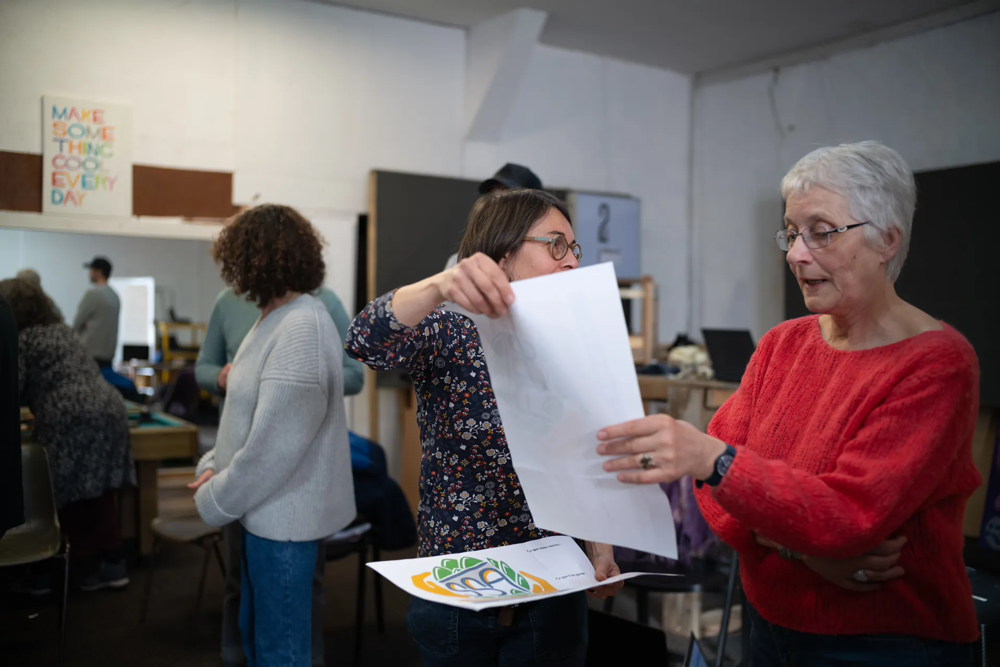
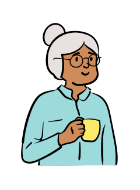
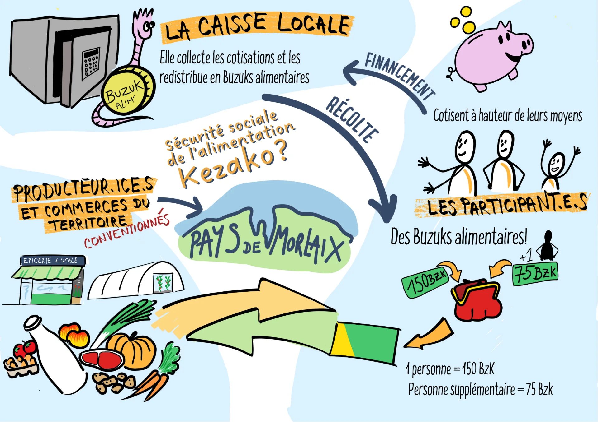
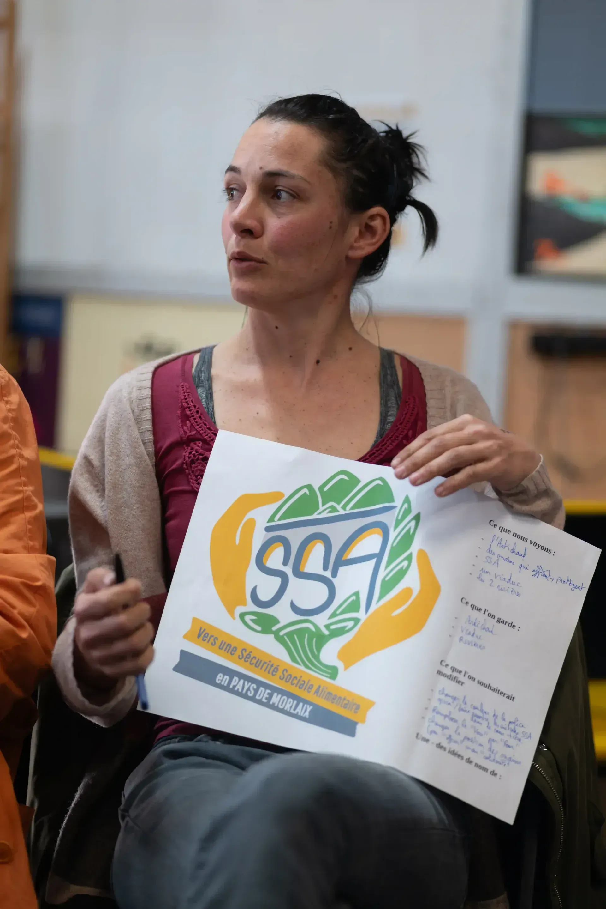

Expérimentation d'une caisse de l'alimentation sur le Pays de Morlaix
Une base de connaissances collaborative sur la Sécurité Sociale de l'Alimentation.


Un premier pas vers une Sécurité Sociale de l'Alimentation
La Sécurité Sociale de l'Alimentation en Pays de Morlaix est une expérimentation portée par un collectif d'associations et de citoyen·nes pour :
- aller vers un droit à l'alimentation pour toutes et tous et soutenir les paysan·nes ;
- contribuer à construire un système alimentaire plus juste et plus durable ;
- recréer du lien et reprendre du pouvoir d'agir collectivement sur notre territoire.
Objectif : c'est une initiative locale qui s'inspire d'un projet de société : celui de mettre en place une sécurité sociale de l'alimentation.
Plus concrètement

- Un parcours citoyen, qui a débuté à l'automne 2025.
- Un budget collectif constitué par les cotisations des membres.
- Une allocation à dépenser chaque mois dans des lieux de distribution alimentaire.

L'engagement des participant·es
Chaque participant·e choisit librement le montant de sa cotisation mensuelle, puis reçoit une allocation en monnaie locale alimentaire, le « Buzuk SSA », à dépenser dans des lieux validés démocratiquement par le groupe. Chaque participant·e s'engage à participer à une réunion et à un atelier collectif par mois.